The Open Source Payoff
The Data-Backed Financial Case from 25 Years of Commercial Open Source
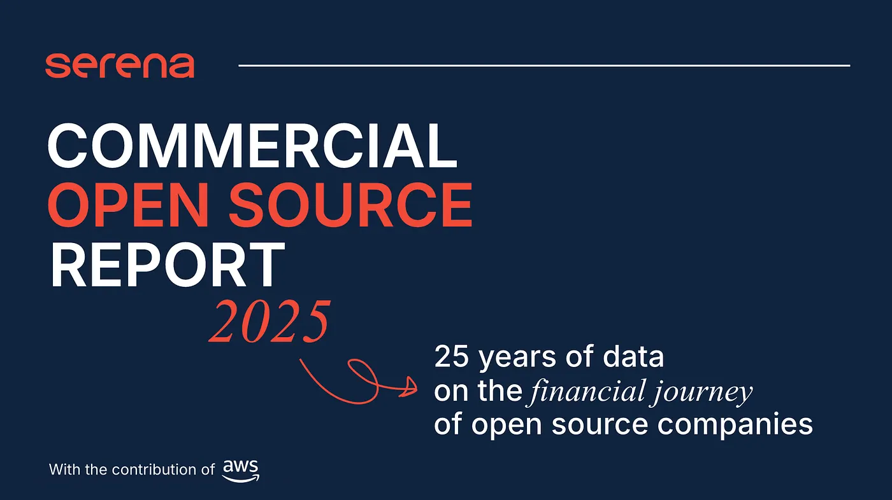
Is Open Source a Good Financial Strategy for Entrepreneurs and Investors?
This report addresses a longstanding debate within the tech ecosystem. Over two decades, open-source software has transformed technology development and adoption. On the demand side, enterprises embrace it to reduce vendor lock-in and enhance transparency, while developers prefer it for flexibility and security.
However, the financial case for entrepreneurs and investors remains contested. While “Open Source speeds up adoption,” monetization remains challenging. Critics argue Commercial Open Source Software (COSS) startups face structural disadvantages competing with cloud providers.
Big Deals and Under-Explored Big Questions
High-profile transactions — Red Hat's $34B IBM acquisition, HashiCorp's $6.4B deal, and MongoDB's $30B+ valuation — challenge claims that open source lacks financial viability. Yet these successes are often dismissed as exceptions.
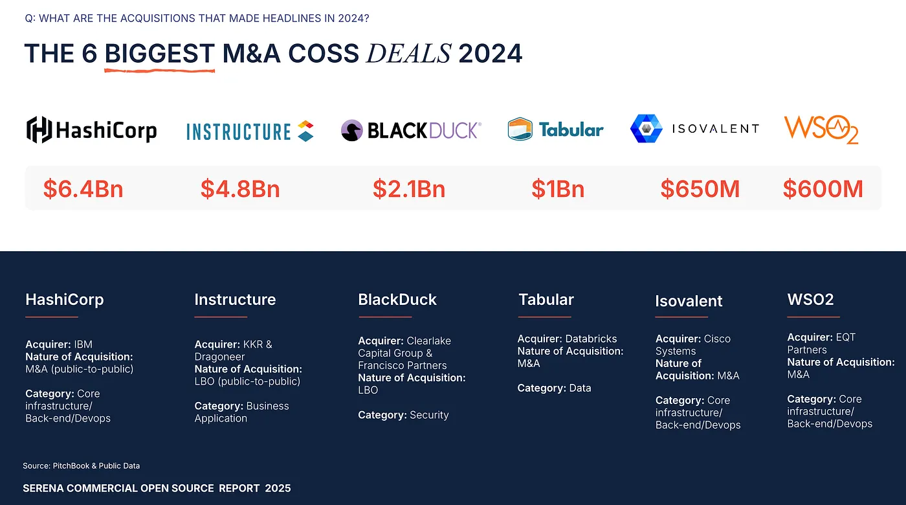
The report unbundles three key questions:
- Is COSS VC-fundable?
- How challenging is the financing journey?
- Do COSS companies deliver superior exits?
Open Source is not only financially viable — it is a superior financial strategy, particularly for infrastructure software.
Research shows COSS companies raise capital faster at higher valuations with better liquidity outcomes than closed-source peers.
Methodology
The research tracks 25 years of venture data (2000–2024) covering over 800 VC-backed COSS companies globally, following them from first VC round to exit (M&A or IPO), benchmarked against matched closed-source software companies.
“Open Source” is defined broadly, covering companies with publicly accessible source code under OSI-approved licenses, open weights in AI, or products combining open-source with proprietary features.
The analysis integrates quantitative financing and exit data (PitchBook) with open-source activity data (GitHub), assessing whether community engagement influences financing success and how COSS performance compares to proprietary software.
Part I: Commercial Open Source as a VC Category
COSS is an Established VC Category
- Approximately 250 deals annually with ~$9B deployed yearly (2019–2024).
- 2024 saw $26.4B raised across 211 deals, representing ~5% of all software VC funding.
- Late-stage conviction reflected in mega-rounds: Databricks ($9.5B), xAI ($11B across two rounds), Mistral AI ($600M Series A).
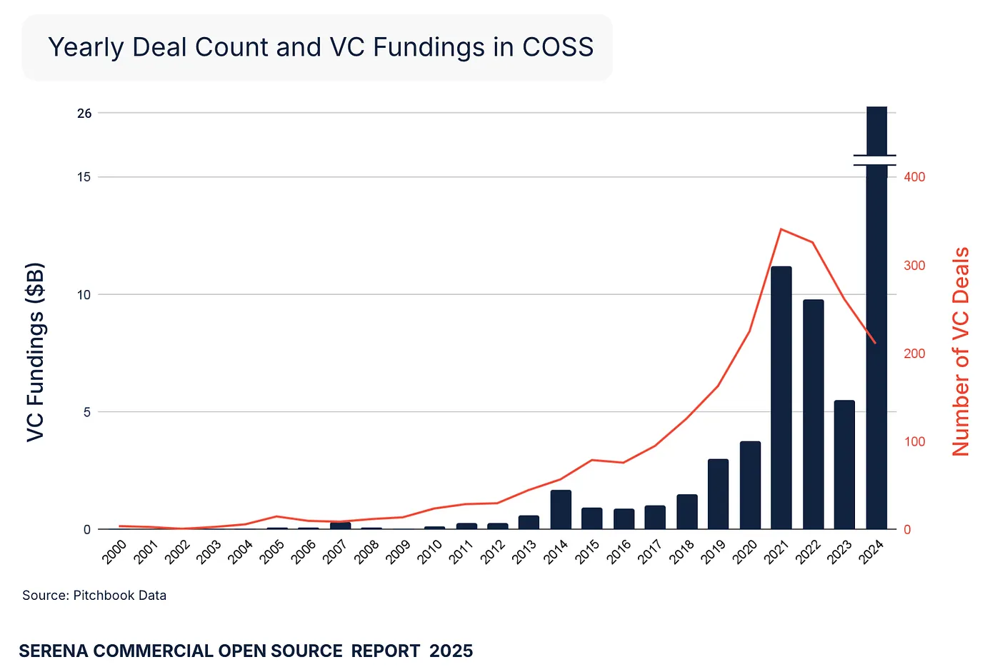
US Leads COSS VC-Backed Companies
- 65% of VC-backed COSS companies are US-based — double the 33% US share in overall software.
- Europe accounts for 20% of COSS companies, nearly matching its overall software share, with notable players including Mistral AI, Aiven, BrowserStack, and Odoo.
- Asia represents 27.5% of global software but only 7.5% of VC-backed COSS companies, indicating slower open-source business model adoption.
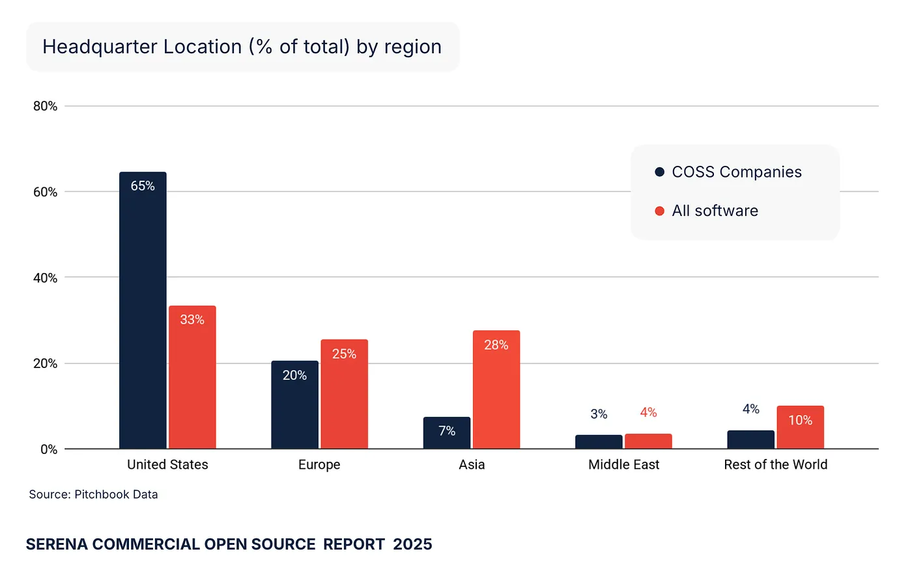
Open-Source Companies Focus on Infrastructure
Approximately 90% of COSS companies operate in infrastructure software rather than business applications. Funding concentrates in Core Infrastructure (20%) and Data (20%), with remaining allocation across AI, DevTools, Security, and Blockchain.
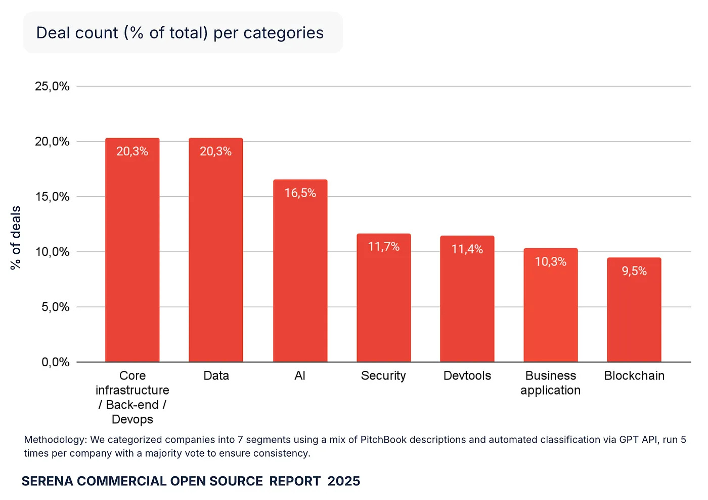
Certain categories show strong natural bias toward open source: DevTools companies are 5.9x more likely to be COSS, and Core Infrastructure/DevOps companies are 5.2x more likely. Business applications and AI lean toward closed-source models.
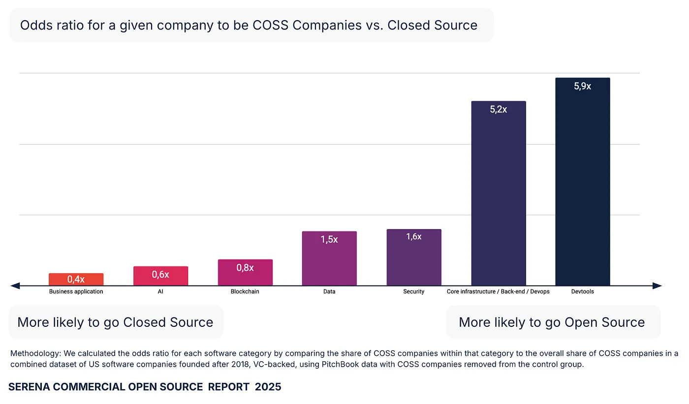
Part II: The VC Journey for Commercial Open Source Companies
COSS Companies Outperform in Fundraising Speed and Valuations
Compared to closed-source peers, COSS companies:
- Raise Series A 20% faster and Series B 34% faster.
- Secure 1.45x larger rounds at Seed, 1.33x at Series A, and equivalent sizes at Series B.
- Achieve higher median valuations: 1.29x at Seed, 1.60x at Series A, 1.23x at Series B.
- Show 91% higher odds graduating from Seed to Series A and 88% higher from Series A to Series B.
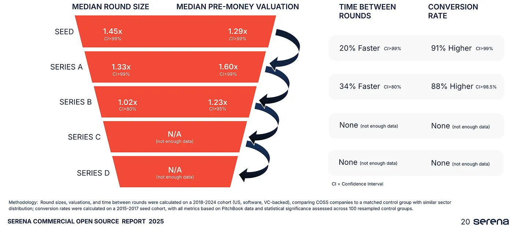
Post-Series C data becomes too sparse for robust conclusions, but early-stage outperformance is clear.
Community Traction Does Not Translate to Efficient Fundraising
Many infrastructure COSS companies secured large rounds with minimal GitHub traction at fundraising time — up to 35% at Seed stage showed no significant community activity.
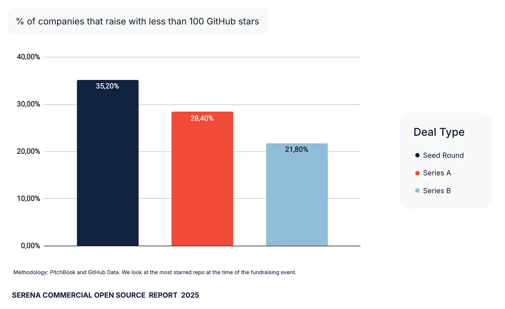
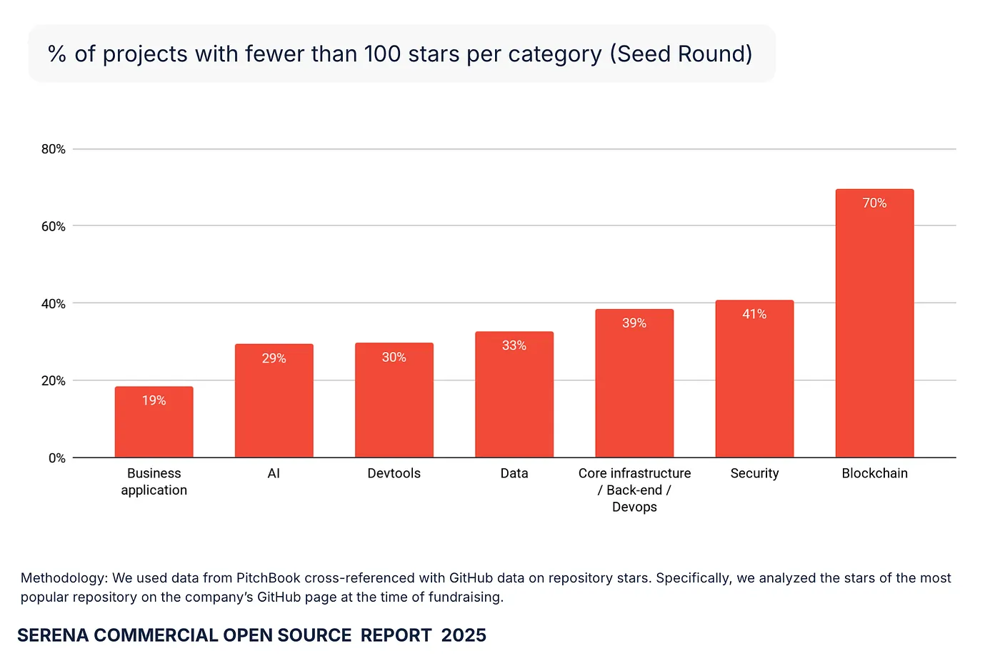
GitHub stars show near-zero correlation with round size (R² = 0.001) and valuation (R² = 0.012). Only Business Applications, DevTools, and Data companies demonstrated weak positive links between stars and valuation, reflecting investor category expectations.
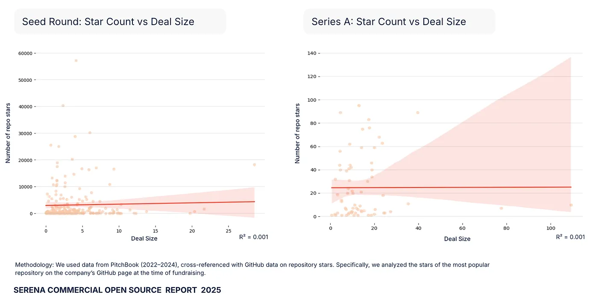
Part III: Liquidity in COSS — M&A, IPOs, and Shareholder ROI
COSS Exits Are Real
12% of all VC-backed COSS companies achieved liquidity through M&A (10%) or IPO (2%), proving exits are substantive rather than anecdotal.
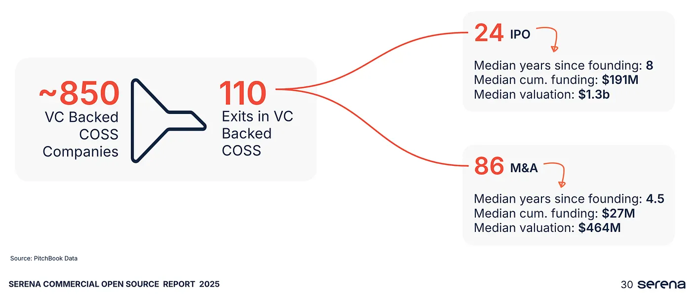
Liquidity timelines show no major difference for M&A (median 5 years for both categories). COSS companies historically took longer for IPOs — 8 years versus 5.6 years for broader software.
COSS Companies Achieve Superior Exit Valuations
At IPO, COSS companies achieve higher median valuations: $1.3B versus $171M for closed-source peers. At M&A, COSS companies secure $482M versus $34M for closed-source companies.
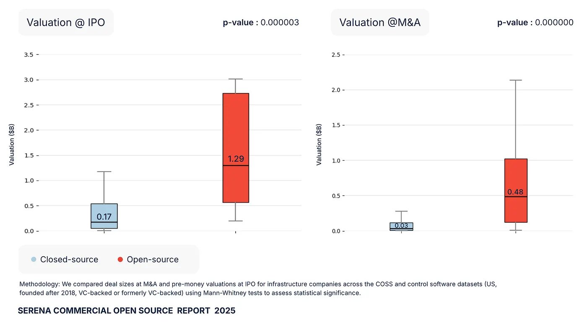
No Liquidity Penalty for COSS
For equivalent valuation levels, COSS companies do not systematically take longer (or shorter) to IPO and do not require systematically more or less capital than closed-source companies.
COSS companies exhibit M&A advantages, capturing higher strategic value at exit and translating systematically into higher valuation per dollar raised and stronger value compounding.
Where Open Source Wins Next Will Define the Next Decade
The debate has shifted from whether commercial open source works to where it will win next and how.
We see open source as a competitive advantage for infrastructure and developer-focused companies. As AI reshapes software, data infrastructure becomes critical, and digital sovereignty rises on national agendas, open source serves as a foundation for:
- Innovation: rapid iteration through global collaboration and composability.
- Trust: transparency and accountability in an opaque era.
- Sovereignty: enterprises and governments gain control over their digital futures.
About the Authors
Matthieu Lavergne led this report and serves on the boards of several COSS companies including Pyannote AI (AI), Opsmill (Infrastructure), Roofline AI (Semi Conductor) or switstack (Payment infrastructure).
Major contributors from Serena included Emma Guetta, Juliette Ast, Antoine Giacomini, Kyle Le Bris Saget, with extended team support from Bertrand Diard, Guillaume Decugis, and Floriane De Maupeou.